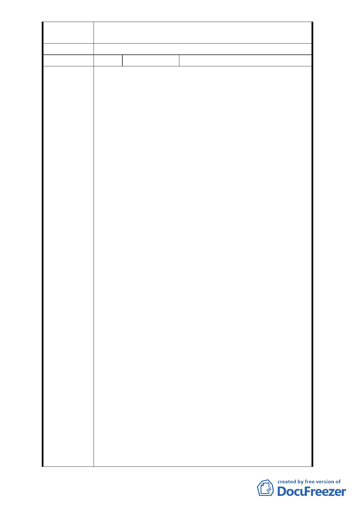

專案小組審
查結論
同陳情案 1
委員會決議 同陳情案 1
編
號 21
陳情人 高金良等共 10 人
1. 依據都發局 98 年 8 月 27 日，北市都規字第 09835579600
號函中表示：（二）重劃負擔：公共設施用地平均負擔比
率約 43.58％、各項費用平均負擔比率約 8.02％、重劃總
平均負擔比率約 51.60％。對地主們而言，以公告現值雖
由先前之美 96,900 元/㎡，提高至 180,000 元/㎡，而重
劃總平均負擔比率仍須高佔 51.60％，遠遠超過法定上限
之 45％負擔，可證此負擔不可不謂「沉重」！
2. 有關計畫區內位於萬壽橋至新光路一段 66 巷北側之 A1
街廓土地，由於後面社區部分住戶之反對，98 年 7 月 22
日召開之「都市設計審議委員會小組會議」決議將 A1
街廓土地之使用分區由原先細部計畫書編定之「第三種
住宅區」改為原先之「公園用地」，此結果對地主們而言，
可使用之土地因此減少，何嘗不是重大損失？
原先發展局經過審慎評估與規劃後，才於細部計畫
中將「A1 街廓範圍土地」編定為「第三種住宅區」。如
今委員會之小組會議決議將「A1 街廓」取消「第三種住
宅區」之編定，維持「公園用地」。為求地方融合並尊重
會議之決議，據了解地主們對此「損己利人」之結果，
陳 情 理 由 雖造成重大損失、亦只能慨然面對接受。而對此決議抱
持『犧牲小我、完成大我』精神之地主們，在此懇請委
員會能給予實質上之容積獎勵或容積補償。
依 98 年 7 月 22 日小組會議之修正說明資料，第三
種住宅區之面積將減少 475.1 ㎡（約 143.72 坪），以第三
種住宅區之容積率 225％計算，其容積樓地板面積將減
少 1,068.98 ㎡（約 323.36 坪），對負擔比率已高達約 51.60
％之弱勢地主們而言，負擔比例更為沉重。
為使萬壽橋至新光路一段 66 巷北側之土地形成完
整之「公園用地」，地主們決定忍痛尊重委員會決議，但
請求委員會能以彌補之精神，將「A1 街廓」之容積移入
「A2 街廓」。因為依本區 98 年 4 月公展之細部計
畫，發展局同意之計畫內容已將「A1 街廓」土地編定為
「第三種住宅區」，其土地之容積亦合理存在。98 年 7
月 22 日委員會之小組會議雖決議將「A1 街廓」土地之
使用分區重新編定為「公園用地」，但「A1 街廓」土地
之容積不應就此取消、憑空消失。
A2 街廓之土地面積約為 3,429 ㎡，其容積樓地板面
積為 7715.25 ㎡（以容積率 225％計算），若委員會惠予
- 18 -